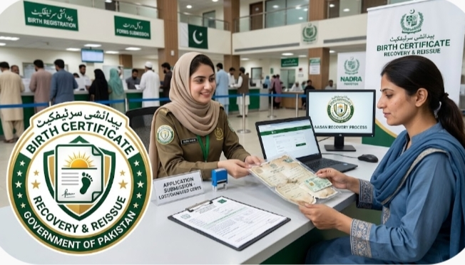

Birth Certificate Lost, Damaged or Wrong Details? Here's How to Fix It

A birth certificate with a missing, damaged, or incorrect detail can quietly turn into a much bigger problem — it can hold up school admission, a B-Form, or a future passport. The good news is that every one of these issues, from a lost certificate to a spelling mismatch, is fixable. This guide walks through the most common problems parents run into and exactly where to go to resolve each one.
Problem 1: The Birth Certificate Is Lost
Misplacing the original certificate is far more common than people admit, and recovering it is more straightforward than it feels in the moment. Since the record was never destroyed — only the paper copy — you don't need to start the registration over.
- Go to the same Union Council, Municipal Committee, or Cantonment Board where the birth was originally registered.
- Provide your CNIC, the child's basic details, and the original registration or tracking number if you still have it.
- Submit a written request for a duplicate or reprinted copy.
- Pay the applicable reprint fee and collect the duplicate once processed.
Problem 2: The Certificate Is Damaged
A torn, water-damaged, or faded certificate is handled the same way as a lost one. Take whatever remains of the original with you if possible — it helps the Union Council locate the record faster — along with your CNIC, and request a reprint.
Problem 3: Parents' CNIC Details Don't Match
If a parent's CNIC number, name spelling, or marital status has changed or been corrected since the birth certificate was first issued, the certificate can end up out of sync with NADRA's current records. This mismatch can cause delays later when the certificate is used for a B-Form, school admission, or passport application.
Problem 4: Spelling Errors or Mismatch With School Records
This is one of the most common — and most stressful — issues parents face. A name spelled one way on the birth certificate and another way on school admission forms can create real complications at enrollment time, and later for CNIC or passport applications too.
Because schools and NADRA both ultimately rely on the Union Council's original record, the fix has to happen at the source. Correcting the spelling on the school form alone does not resolve the underlying mismatch — the birth certificate itself needs to be amended.
How the correction process works
- Visit the issuing Union Council in person — corrections typically can't be completed remotely.
- Submit a written application explaining the exact correction needed.
- Provide supporting proof: the hospital birth slip, parents' CNICs, and if available, the school record showing the correct spelling.
- Union Council staff verify the documents against their records.
- Once approved, a corrected certificate is issued.
Documents Generally Required
- CNIC of both parents (current and valid)
- The original certificate, even if damaged — if you still have it
- Hospital birth slip or vaccination card, where available
- School record or other document supporting the correct spelling, for name corrections
- A written application addressed to the Union Council describing the issue
Why You Need to Visit the Union Council in Person
Unlike some NADRA services that have moved online, birth certificate duplicates and corrections generally still require a physical visit to the specific Union Council that issued the original record. This is because the supporting documents usually need to be verified against the original paper or digital record held locally, which an online system typically can't confirm on its own. Always go to the same Union Council where the birth was first registered — a different office will not have your record on file.
Frequently Asked Questions
I lost my child's birth certificate. Can I get a duplicate?
Yes. Visit the same Union Council where the birth was originally registered and apply for a duplicate or reprinted copy. You will usually need your CNIC, the child's details, and any reference or tracking number from the original registration if you have it.
My child's birth certificate has a spelling mistake in the name. How do I fix it?
Spelling and name corrections are handled at the same Union Council that issued the original certificate. You will need to submit a written correction request along with supporting proof, such as the hospital slip, parents' CNICs, or school documents showing the correct spelling.
Why doesn't my child's birth certificate match their school record?
This usually happens when the certificate was issued with a typing error, an old spelling, or outdated parent information that was never updated. Since schools and NADRA both rely on the Union Council record, any mismatch should be corrected at the source — the Union Council — rather than on the school form.
My CNIC details changed after my child's birth certificate was issued. Do I need to update the certificate?
If a parent's CNIC number, name spelling, or other recorded detail has changed or was corrected after the certificate was first issued, it's a good idea to get the birth certificate updated to match, especially before using it for a B-Form, passport, or school admission, to avoid mismatches later.
Can birth certificate corrections be done online?
Most corrections still require an in-person visit to the issuing Union Council, since original supporting documents typically need to be verified physically. Some Union Councils are moving toward online and app-based systems, but availability varies by area.
What documents do I need for a correction or duplicate request?
Generally you'll need the parents' CNICs, the original certificate (if you still have it, even damaged), the hospital birth slip, and any document that supports the correct information, such as a school record or affidavit.